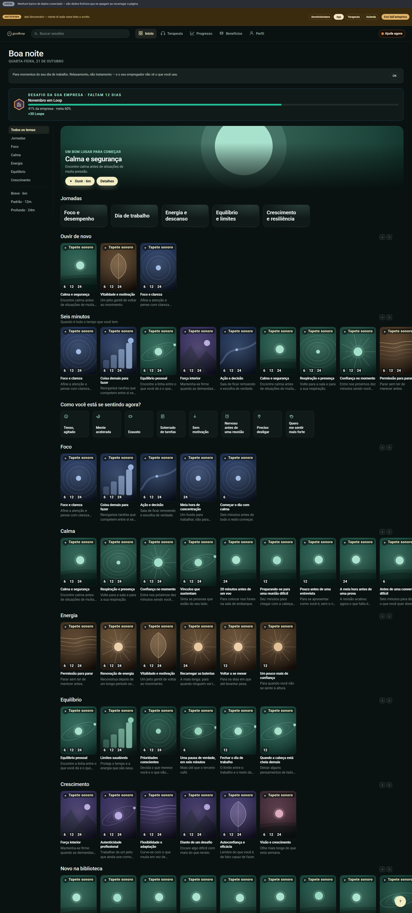
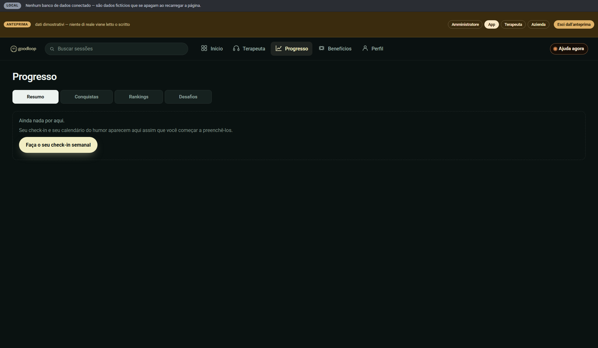
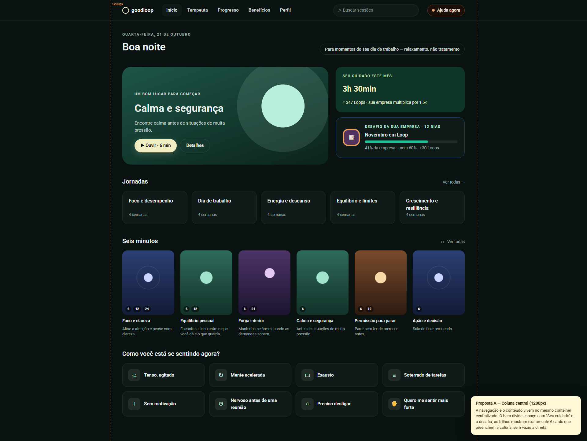
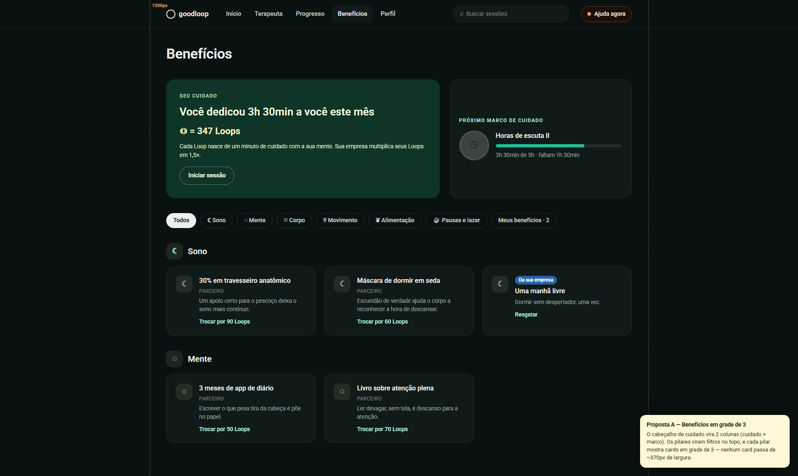
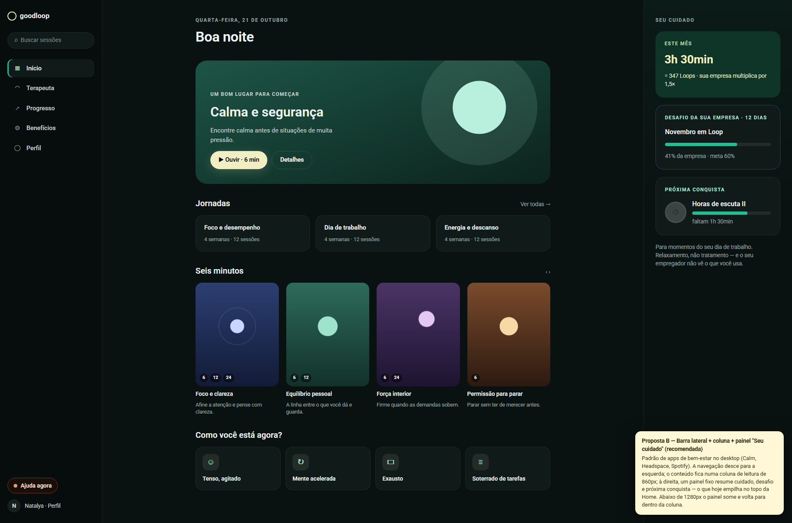
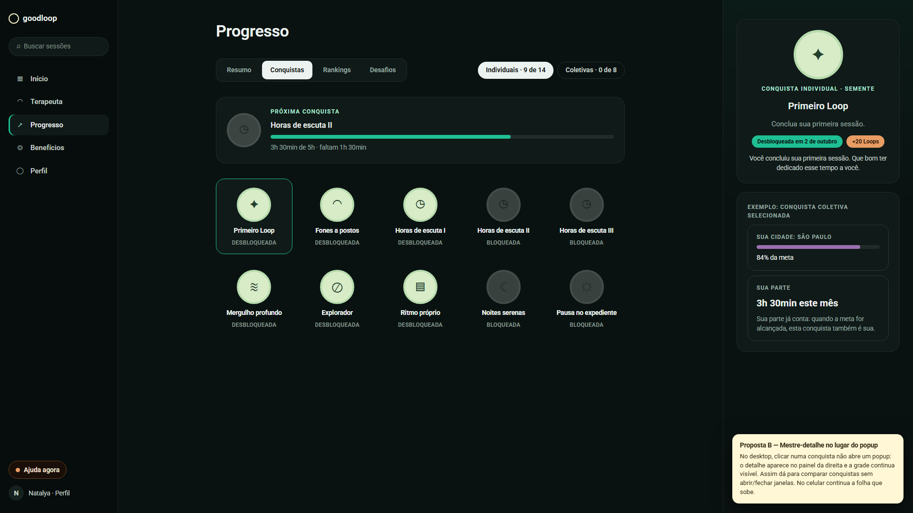
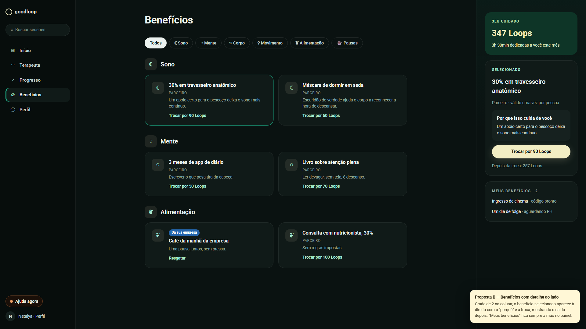
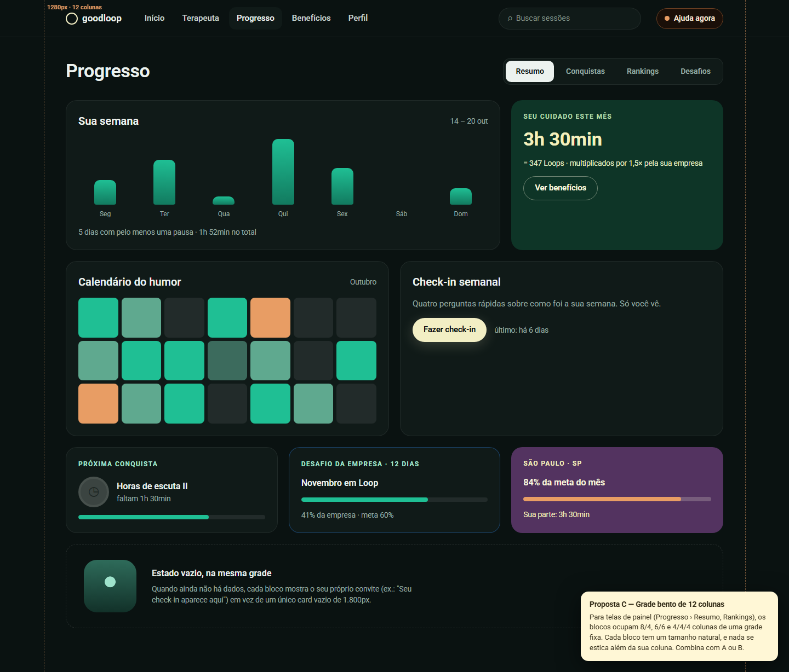

Good Loop · desktop
Mockups estáticos — nada aqui é usado pelo app. Detalhes, prós e contras no README.md desta pasta. Cada imagem abre em tamanho real; os links abrem o mockup navegável.







